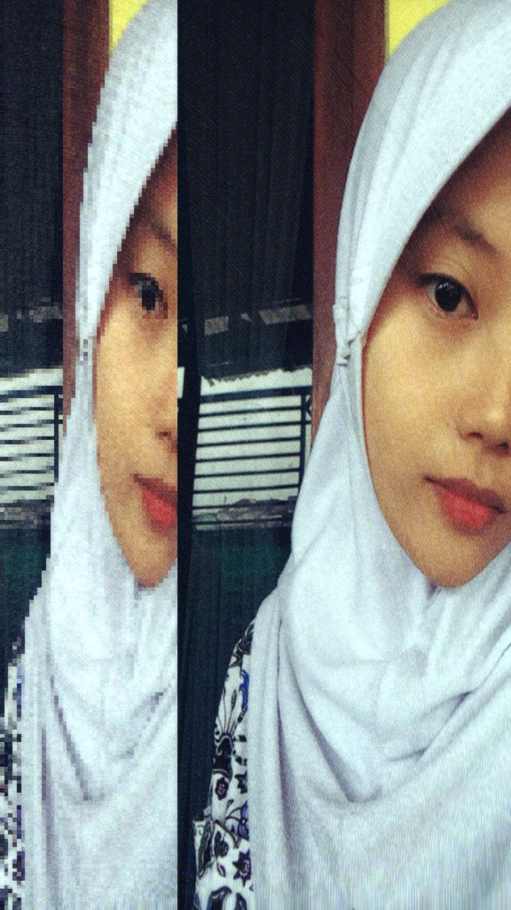
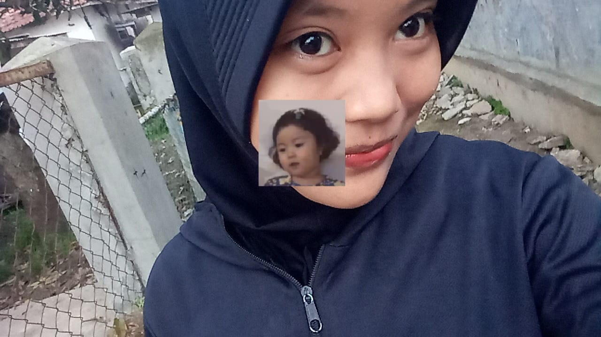
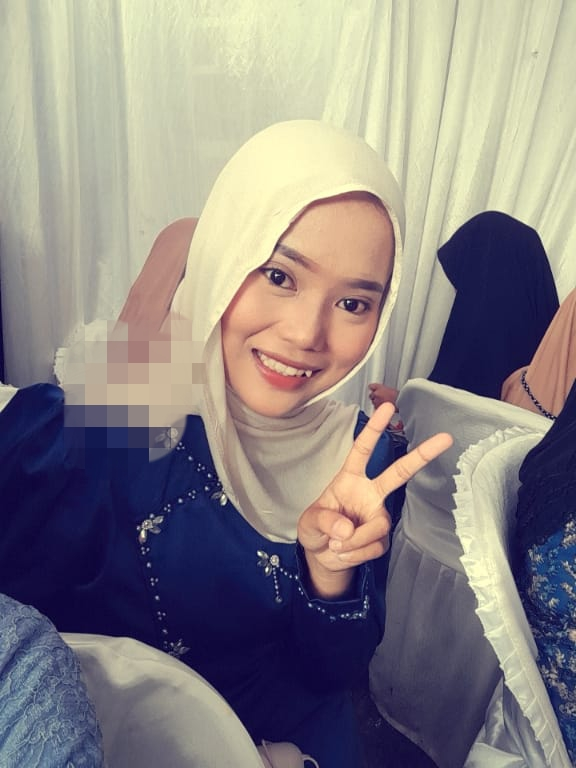

Pacarku
Hai, izinkan aku bercerita sebentar. Tentang seorang perempuan bernama Yayang. Perempuan yang olehku dipanggil Yayang. Bukan karena namanya harus disingkat, tapi karena rasanya lebih dekat di hati.
Yayang adalah perempuan yang kelihatannya biasa saja bagi dunia, tapi luar biasa bagiku. Dia menjalani hari-harinya dengan cara yang tidak semua orang sanggup menirunya. Kadang dia lelah, kadang dia diam, tapi entah bagaimana, dia selalu bertahan. Dan aku? Aku hanya ingin ada di sampingnya, memastikan dia tidak merasa sendirian.
Ada sesuatu tentang Yayang, yang membuatku selalu merasa ingin pulang. Setiap pesanku dibalas dengan antusias, setiap ceritaku didengarkan dengan sabar. Dia adalah seseorang yang membuat hal-hal kecil terasa penting, dan hal-hal berat terasa sedikit lebih ringan.
Yayang punya banyak sisi. Seperti langit sore, dia tidak pernah benar-benar satu warna. Tapi ada beberapa yang paling sering muncul.
Marah

Yayang bisa marah. Terutama kalau aku berbuat salah, atau tiba-tiba
menghilang tanpa kabar. Marahnya bukan marah yang menakutkan, lebih seperti
cara hatinya berkata bahwa dia peduli. Dan lucunya, dia sangat mudah luluh.
Sedikit perhatian, sedikit kejujuran, dan satu kalimat lembut dariku biasanya
sudah cukup.
Pemalu

Di balik semua keberaniannya, Yayang adalah perempuan yang pemalu. Di tempat
yang membuatnya tidak nyaman, dia lebih memilih diam. Aku sering menjadi
suaranya, menyampaikan apa yang sebenarnya ingin dia katakan. Bukan karena
dia tidak mampu, tapi karena hatinya terlalu lembut untuk terburu-buru.
Manja

Dan tentu saja, Yayang itu manja. Manja yang tidak dibuat-buat. Manja yang
datang tiba-tiba, lewat tatapan mata atau permintaan pelukan. Saat itu
terjadi, aku selalu berpikir satu hal: perempuan seperti ini, pantas
dijaga sebaik mungkin.
Sebenarnya masih banyak yang ingin aku ceritakan tentang Yayang. Tentang caranya tertawa, caranya diam, caranya membuat aku merasa cukup hanya dengan kehadirannya. Tapi beberapa hal memang lebih baik disimpan di hati. Lagi pula, kalau aku ceritakan semuanya, nanti ada yang jatuh cinta juga. Bisa saingan denganku.
Bandung, 14 Februari 2026.